5.2 Proxy transparente para HTTPS
1. Introducción
En este capítulo se va a implementar un proxy transparente pero esta vez para conexiones https. Para simplificar el proceso, se utilizarán certificados autofirmados en vez de unos firmados por una CA, pero es importante entender que esto no se debería hacer en un sistema en explotación, es decir, se tendría que tener una CA propia y trabajar con ella.
2. Escenario
Se parte del escenario final del capítulo 5.1 Proxy transparente para HTTP, donde el esquema es el siguiente:

Figura 1. Esquema de red - Proxy Squid en ubuntu server con Mikrotik.
3. Configuración del firewall de MikroTiK
En primer lugar, se configura el firewall del router MikroTik Back-End para que marque todos los paquetes que quieran atravesarlo y cuyo puerto destino sea el puerto 443 (https). Hay que tener en cuenta que no hay que marcar los paquetes que vengan del propio servidor proxy (!192.168.2.254). A continuación se describe el proceso a seguir.
1. Firewall - Mangle
En primer lugar hay que acceder a IP --> Firewall --> Mangle para añadir una regla que marque con la etiqueta "to-proxy" todos los paquetes HTTPS (se dejan los HTTP del apartado anterior) de la red interna que no vengan del servidor proxy antes que que sean enrutados. Más tarde, esta etiqueta será usada para determinar la entrada de la tabla de enrutamiento a aplicar. Los parámetros a configurar son:
- Chain: prerouting
- Src. Address: !192.168.2.254 (que no provengan del servidor proxy).
- Protocol: tcp.
- Dst. Port: 80,443.
- In. Interface: ether2 (interfaz de la red interna).
- Action: mark routing.
- New Packet Mark: to-proxy.
- Comment: Marcado proxy http y https.
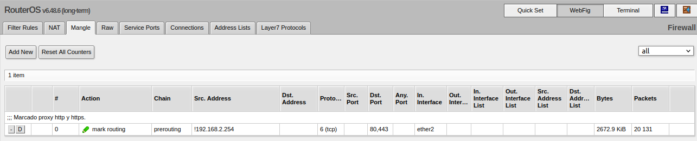
2. Configuración del enrutado de MikroTik
Cada paquete marcado con la etiqueta "to-proxy" deberá ser enrutado hacia el servidor proxy. Para ello, hay que añadir una nueva entrada en la tabla de encaminamiento de manera que envíe al servidor proxy squid todos los paquetes marcados con la etiqueta "to-proxy". Las acciones a realizar son las siguientes:
1. Acceder a IP > Routes > Routes y añadir una nueva entrada en la tabla de encaminamiento, donde los parámetros a configurar son:
- Dst. Address: 0.0.0.0/0
- Gateway: 192.168.2.254 (ip servidor proxy).
- Routing Mark: to-proxy.
- Comment: Enrutado paquetes marcados con la etiqueta to-proxy.
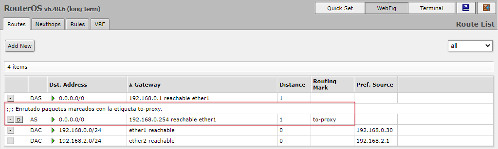
4. Configuración de Squid/iptables en Ubuntu Server
En este apartado, hay que trabajar en el servidor proxy Squid.
En primer lugar, hay que localizar el certificado autofirmado y la clave privada. Cuando se instala openSSL en el servidor, se genera una clave privada y un certificado autofirmado con esta clave. Para localizarlos, se pueden ejecutar los siguientes comandos:
root@perseo:/#find / -name *snakeoil* 2> /dev/null
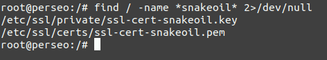
Como se puede observar en la figura superior, los ficheros se encuentran en:
/etc/ssl/private/ssl-cert-snakeoil.key
/etc/ssl/certs/ssl-cert-snakeoil.pem
En el caso de que no se tenga, se pueden generar mediante la herramienta make-ssl-cert.
root@perseo:/#make-ssl-cert generate-default-snakeoil
A continuación, hay que realizar los siguientes pasos:
1. Editar el fichero squid.conf
El primer paso es añadir un puerto extra para que gestione el tráfico interceptado de manera transparente (etiqueta proxy-https), pero antes, es interesante buscar la ayuda de la directiva TAG: https_port, donde se tiene una descripción de los distintos modos de funcionamiento que se tienen. Es importante conocer los distintos modos para aplicar el necesario en el escenario actual.
2. Añadir directiva https_port (interceptar tráfico etiquetado)
A continuación, hay que localizar la directiva https_port para añadir en la parte final una nueva donde:
- El puerto será el 3127 (por ejemplo).
- Modo de trabajo: intercept.
- La ruta tls-cert y tls-key es la que se ha obtenido en la búsqueda:
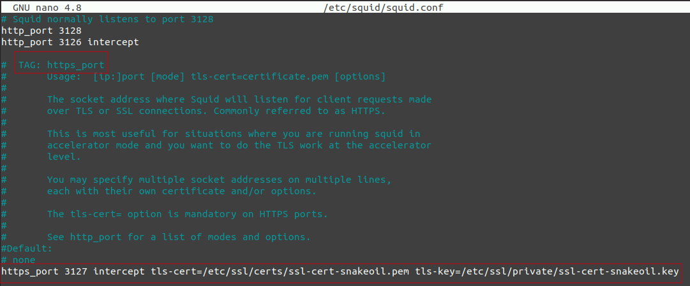
3. Configuración del cortafuegos de Ubuntu Server
En estos momentos, Squid esté escuchando el puerto 3127 a la espera de paquetes interceptados, pero los paquetes que el router Back-End está enviando tienen como puerto destino el 443, así que es necesario añadir una regla en iptables en la tabla nat para que un paquete HTTPS que venga por el interfaz físico del servidor antes de que sea enrutado se reenvíe al puerto 3127 del mismo.
root@perseo:/#iptables -t nat -A PREROUTING -i enp0s3 -p tcp --dport 443 -j REDIRECT --to-port 3127
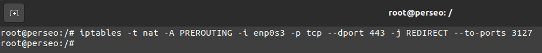
Si se comprueba iptables, se observa que se ha añadido la regla correctamente:
root@perseo:/#iptables -t nat -L
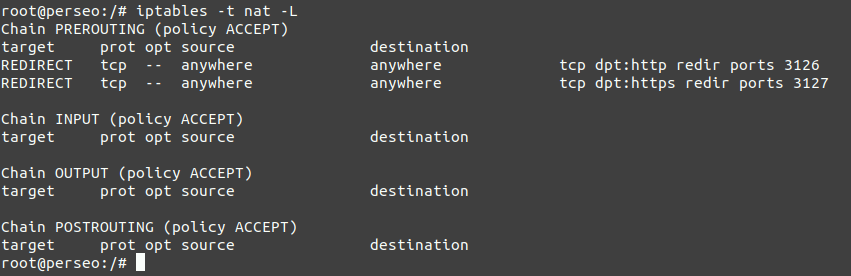
5. Configuración de los clientes y pruebas
Una vez configurado el proxy transparente https, ya no será necesario configurar el proxy en los navegadores de los equipos de la red, sino que simplemente, se dejará la configuración por defecto en el apartado del Proxy del navegador.

Prueba en Cliente Windows
Cuando se accede al navegador web, aparece un mensaje informativo indicando que el certificado que se está utilizando en el navegador no es de confianza (certificado del servidor proxy). Para coninuar, hay que pulsar en Sí, aunque la navegación para el protocolo https se realizará en modo no seguro en aquellas páginas que no dispongan de HSTS (por ejemplo: google y github sí utilizan HSTS).
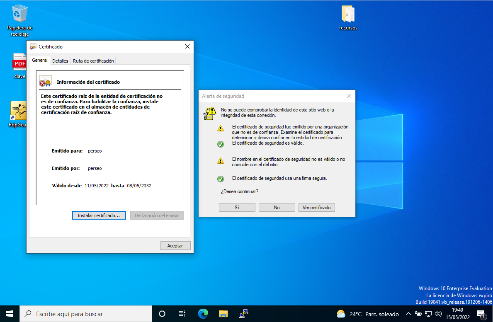
Si se accede a una página web mediante https, se avisa de que no se dispone de un certificado de autoridad válido. Para este caso, dado que github usa HSTS, no se puede visitar github.com en este momento.
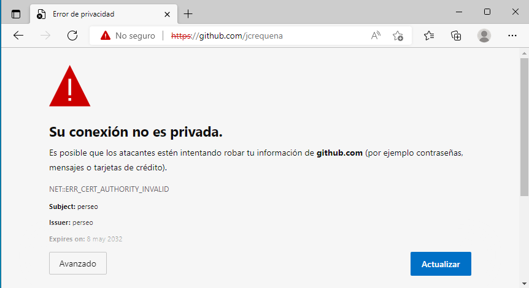
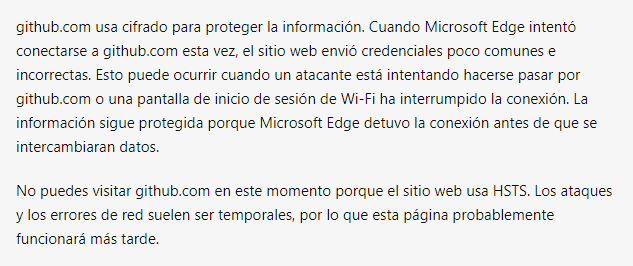
Si se accede a la página https://www.upv.es, aparece una advertencia dado que el certificado que se está utilizando es el del servidor proxy y no es de una autoridad válida. Si se pulsa en Continuar, se accede a la web pero en modo no seguro. Este es el motivo por el que no se debería utilizar un certificado autofirmado por la CA del servidor ubuntu.
| 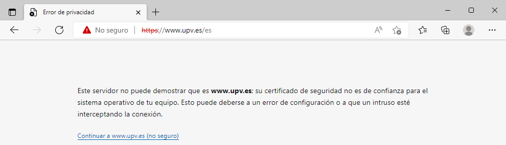 | 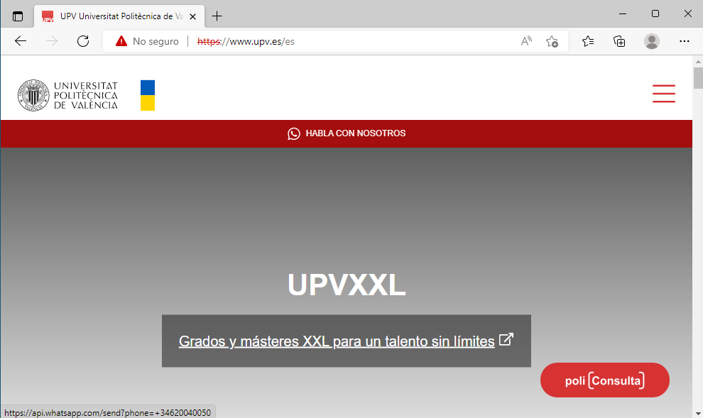 |
Si se accede a IP > Firewall > Mangle, se observar que se tiene tráfico (Bytes/Paquetes) por lo que se están etiquetando los paquetes que provienen de los equipos de la red interna a excepción del servidor proxy, en este caso, del equipo Ubuntu Desktop 20.04 que es el utilizado para realizar las pruebas.
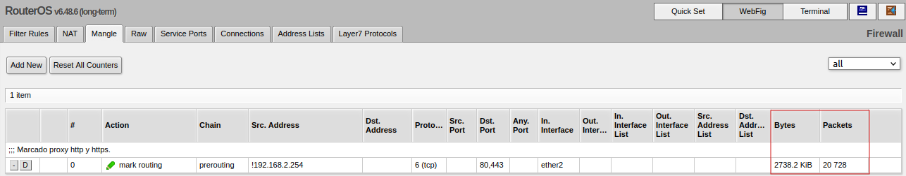
Obra publicada con Licencia Creative Commons Reconocimiento No comercial Compartir igual 4.0